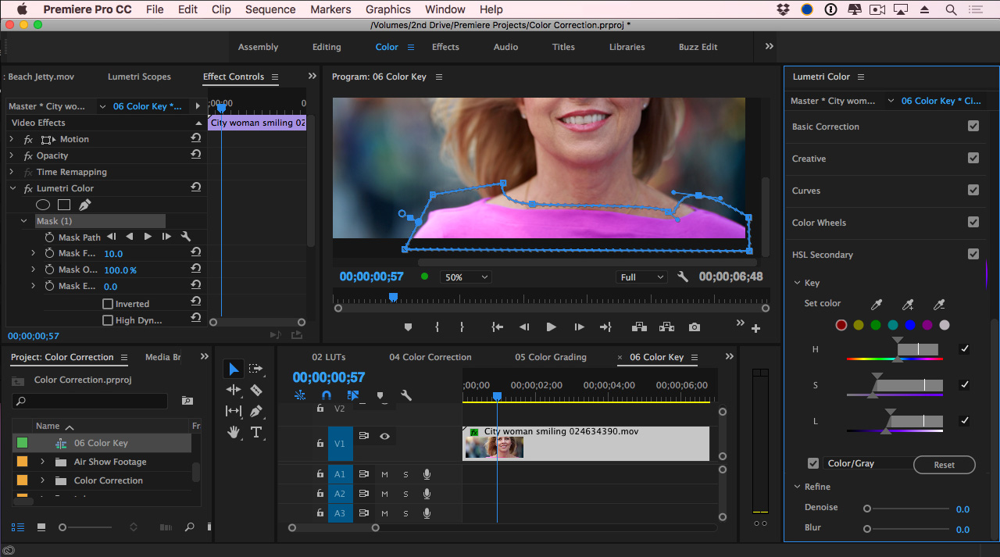

Le Monde Informatique
Adobe Premier pro
Adobe Premiere Pro gère de nombreux formats vidéo et intègre un système de scénarimage (storyboard) très complet. C'est un logiciel de montage virtuel comme Avid ou Final Cut Pro. Adobe Premiere Pro a eu longtemps mauvaise réputation dans le monde professionnel, notamment à cause de nombreux bugs et d'une interface peu ergonomique. Cependant, depuis la version « Pro », de nombreuses améliorations ont été apportées, en particulier une stabilité accrue. Son principal atout est les liens avec les autres produits Adobe (très utilisés dans le monde professionnel), tels que Encore, After Effects ou Photoshop. Depuis la sortie de la version Pro (7.0), il existe une version grand public, baptisée Adobe Premiere Elements, qui reprend la plupart des fonctionnalités de la version Pro, avec toutefois certaines limitations pour des besoins professionnels.
| Disigned by |